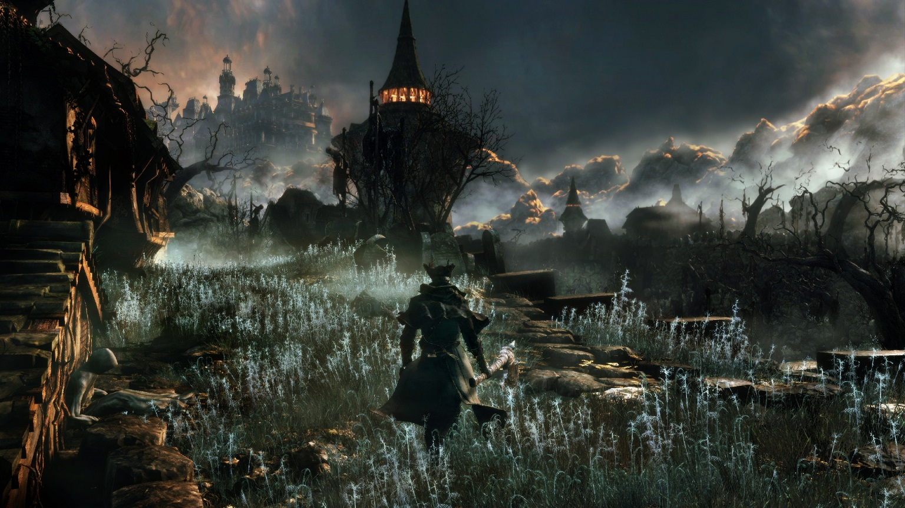
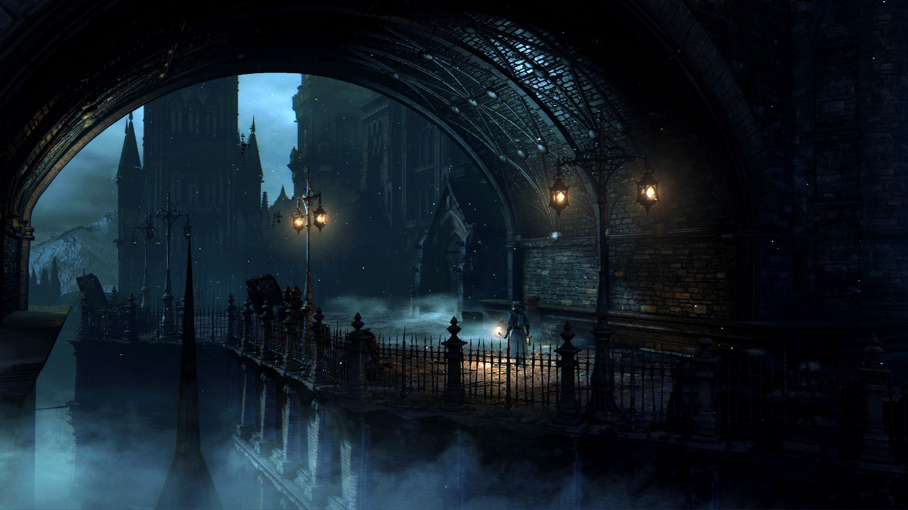
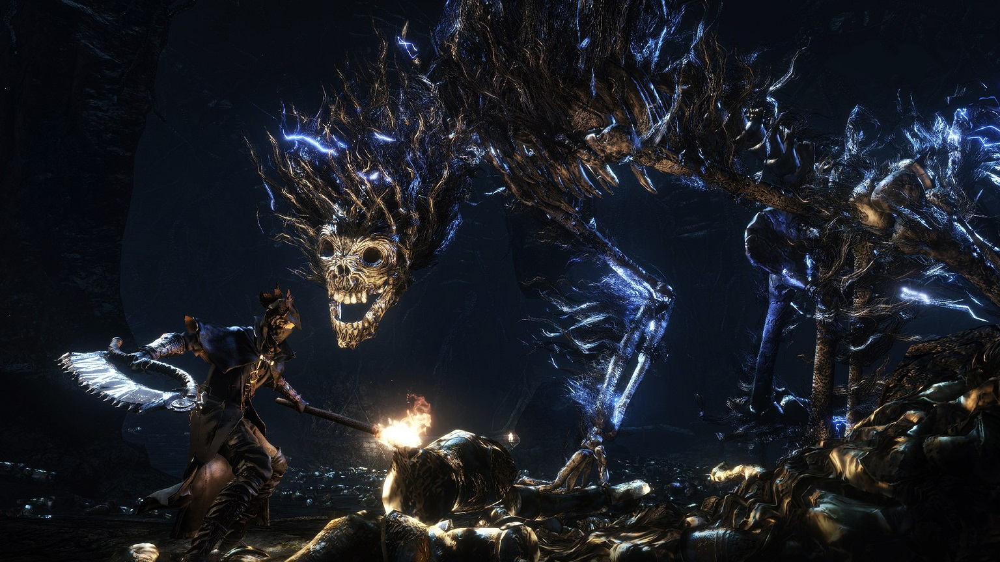

《血源诅咒》是由FromSoftware开发的一款ARPG(动作角色扮演），于2015年3月24日在日本发行。Bloodborne继承From Software出品游戏一向的黑暗风格，成为一款无情恐怖的全新原创动作角色扮演游戏。
本作中的虚拟世界，设定在位于遥远东方，人烟罕至的山区古都“雅南”，是个被诅咒的城市，自古流传着怪兽瘟疫的奇特地方性疾病。如同病症之名，患上此病症的患者如同病名般将会成为丧失心智的野兽。然而，宛如被诅咒般的古城中，同时也相传有可以医治病根的医疗技术，多数此病症的患者长途跋涉至雅南，寻求解救的方法。
而玩家进入游戏世界后，扮演为了求医而来到雅南的外国冒险者，在不知名的神秘男子的指引下接受输血之后，陷入一个充满怪物的梦境，接着便在诡异的医院中苏醒....
玩家一开始身上并没有任何道具和武器等装备，等于是赤手空拳的状态在医院中探索。很快的，先前在梦中见到的狼人就在玩家的眼前现身，而游戏很恶意地设计成 “开头一定先让你死一次”（当然你技术好可以不死，并不是剧情杀），赤手空拳、攻击只能造成2到3点伤害的主角大约两下就会被放倒。
死亡的玩家会被传送到“猎人梦境”，这是本作中主要的补给点，之后死亡的话都会传送回到此处。玩家可以在“浴池信使”处购买道具和装备，以及在“遗弃人偶”处升级角色的能力。在获得第一把武器时，玩家可以在标准型的“锯肉刀”、力量型的“猎人斧”和技巧型的“螺纹手杖”这三种武器中选择一种。除了近战武器外，还可以选择一把远距离的枪械，有标准的“手枪”和散弹效果的“霰弹枪”供玩家挑选，但新手建议使用“猎人斧”+“霰弹枪”组合，斧头变形后完全是神器，挫折感会减轻许多。
随着游戏的发售，众多提前拿到游戏的海外媒体也解禁了已经准备好的评测以及打分，其中绝大多数对游戏给予了极高的评价。例如GameSpot的评价是9分（非常好），扣分的项目只有过长的读盘时间以及圣杯迷宫模式比较令人失望。
知名游戏杂志GameInformer更是打出了一个接近满分的9.75，盛赞游戏从画面到音效的各个元素。
著名打分网站Metacritic上前23家媒体的平均分更是达到了93分，100分的满分评价更是为数不少。
有PS4的强大机能作为保障，又支持中文显示，据偷跑玩家反映游戏主线流程长达40个小时，这样的容量对一款动作游戏来说已经是良心满满。如果是从“魂”系列一路走来的PS4玩家一定不要错过这款诚意之作。